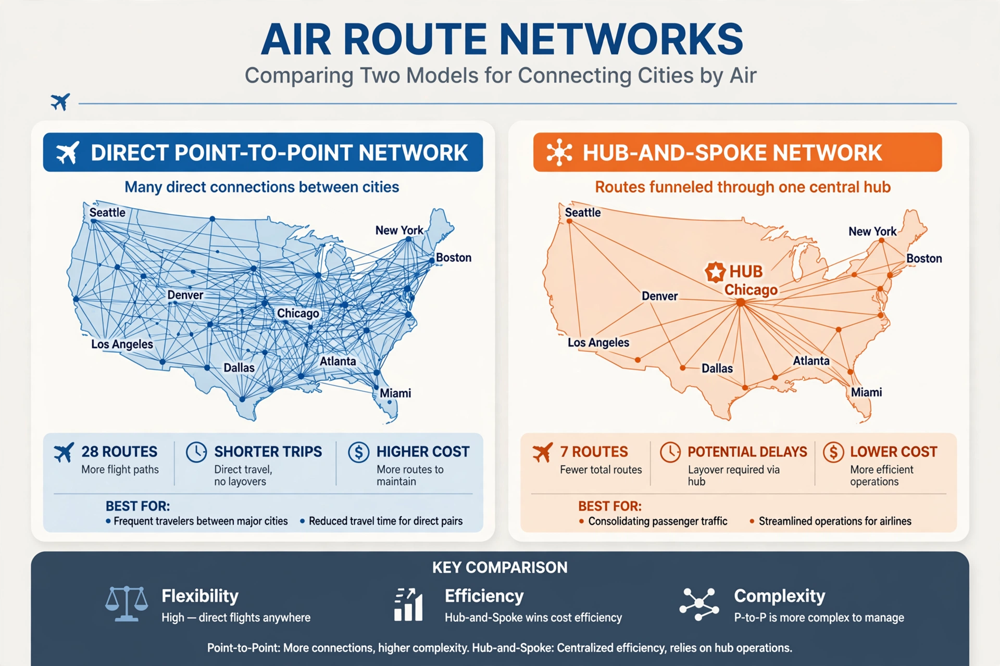

| Model | Direct flights between city pairs, no hub |
| Contrast | Hub-and-spoke system |
| Proponents | Southwest Airlines, Ryanair, other low-cost carriers; Boeing |
| Typical aircraft | Boeing 737, Airbus A320 family; long-range 787/A321XLR |

Point-to-point transit is a transportation model in which passengers (or freight) are carried directly between two points with no intermediate stops to change vehicles. In aviation it contrasts with the hub-and-spoke system, in which flights funnel through central hub airports where passengers connect.
Point-to-point networks suit routes with enough origin-and-destination demand to fill aircraft without connecting traffic. Low-cost carriers such as Southwest Airlines and Ryanair built their businesses on point-to-point flying, often between secondary airports, achieving fast turnarounds and high aircraft utilisation. Travellers benefit from nonstop flights and simpler itineraries; airlines avoid the cost and congestion of maintaining large connecting hubs but must accept thinner traffic on each route.
Traditionally, long-haul flying favoured hubs because only large wide-body aircraft had the range, and they needed feed traffic to fill. The fuel-efficient Boeing 787 Dreamliner and Airbus A350 — and long-range narrow-bodies such as the A321XLR — changed the economics, enabling profitable nonstops between secondary cities (e.g. transatlantic services bypassing the biggest hubs). This was central to Boeing's marketing case for the 787 against Airbus's hub-oriented A380.
Point-to-point service may offer fewer frequencies and destinations than a hub network, and a disruption on one leg offers passengers fewer re-routing options. In practice most large network carriers operate hybrid systems.